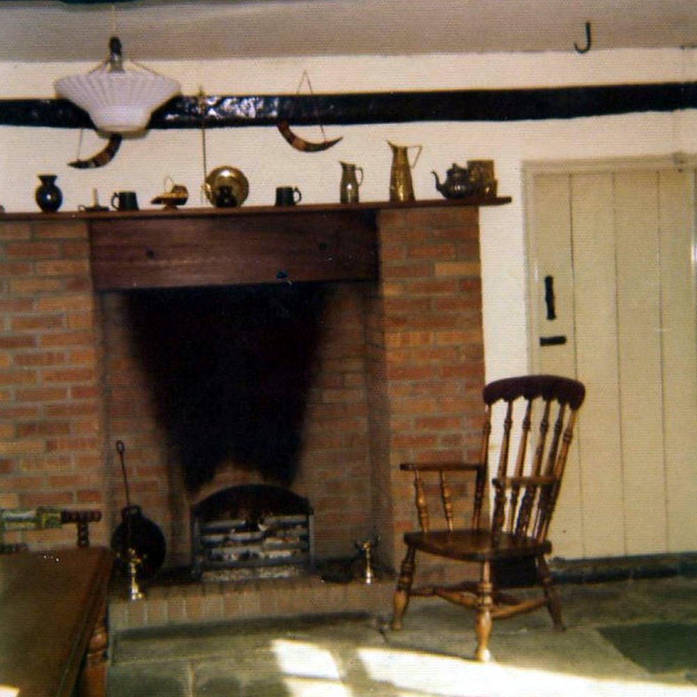

William Beverley (Billy) Buckler, 1948–1990
William Buckler, known as Billy, was born on 25 August 1948, a son of Nancy and Fred. On his mother’s death in 1983 he took up the defence of the house. He was the defendant in BP Properties Ltd v Buckler, which went against him in the Court of Appeal in 1987, and he lived at the farm with his wife Branwen and their children until the eviction of November 1988. The events of 1988 and 1989 are told in Recorded Incidents. A probate entry for a William Beverley Buckler of Penarth, who died on 29 April 1990, is probably his.
31 July 1987 — BP Properties Ltd v Buckler [1987] EWCA Civ 2
- Record:
EV-0080 (Legal Wiki, Evidence Register)
“The plaintiffs, BP Properties Ltd, have the paper title to the farm, and indeed since November 1982 they have been the registered proprietors of it at HM Land Registry following first registration.” (Dillon LJ)
What the record shows. The Court of Appeal judgment in William Buckler’s appeal, limited to the farmhouse and garden. It went against him. It records his date of birth as 25 August 1948.
What it does not show. This book uses the judgment for dates and family facts only; the litigation is outside its scope.
1991 calendar — Probate calendar: William Beverley Buckler
- Record:
EV-0274 (Legal Wiki, Evidence Register)
“BUCKLER, William Beverley of [Penarth] S Glam died 29 April 1990 Administration Llandaff 11 July Not exceeding £115000”.
What the record shows. The 1991 probate calendar records William Beverley Buckler of Penarth, who died on 29 April 1990, with administration granted at Llandaff on 11 July 1991. With the 1948 birth date in the judgment he would have been 41.
What it does not show. A probable match for William (Billy) Buckler; the identity is not proven by the calendar alone.


The hearth, from the farm’s own album (Part 1, no. 108). Source: Wayback Vault, album image.